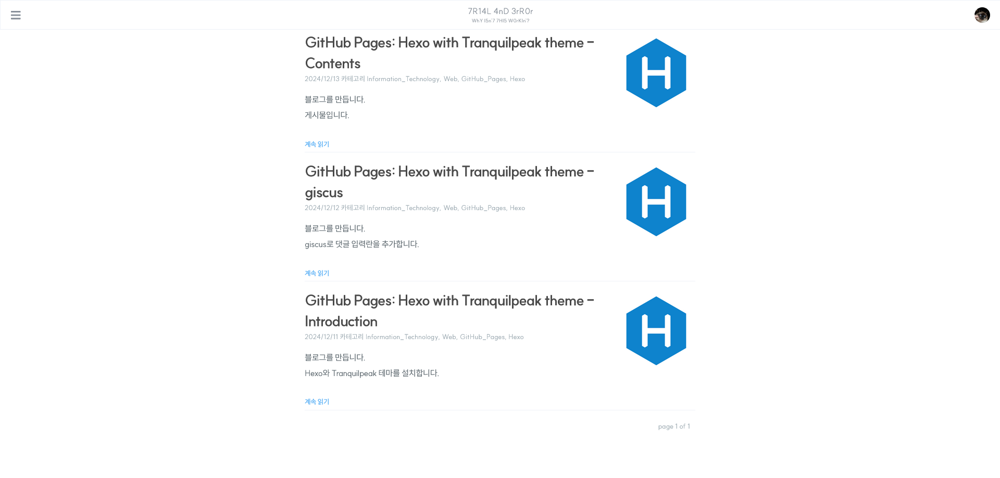

GitHub Pages: Hexo with Tranquilpeak theme - Deploy
Contents
Introduction
지금까지 작업한 것을 인터넷에서도 접근할 수 있게 배포합니다.
마무리 단계입니다.
Deploy
이하 과정 중 막히는 부분이 있다면 Hexo 공식 문서를 따라서 진행하시면 됩니다.
명령 프롬프트를 열고 Hexo 폴더로 이동해서 npm install hexo-deployer-git --save[1] 명령을 실행합니다. Hexo의 배포용 파일을 Git 저장소에 배포하는 플러그인입니다.
<folder>/_config.yml에서 deploy 부분을 수정합니다.
deploy:
type: git
repo: https://github.com/<username>/<project>.git # GitHub Pages 저장소 주소 끝에 .git을 붙입니다.
branch: master # 다른 브랜치를 사용하려면 값을 수정해야 합니다.저장하고 hexo deploy[2] 명령어를 실행하면 GitHub 저장소에 Push되고, 배포가 자동으로 진행됩니다. GitHub Pages 저장소에서 진행과정을 볼 수 있습니다.
GitHub에 Push했는데도 GitHub Pages에 배포가 진행되지 않으면 포스트나 첨부 파일 등 뭐라도 좋으니 약간 수정해서 다시 Push를 진행해 보세요. 저장소가 비어있을 때 뭔가 업로드가 되어야 GitHub Pages를 생성할 준비가 되는 것 같습니다.
배포가 완료되면 GitHub Pages에 접속해서 결과를 확인합니다.

이제 취향대로 수정하면서 자신만의 블로그를 만들어나가면 되겠습니다.
[1]
--save는 패키지를 설치할 때package.json파일의dependencies항목에 같이 저장하라는 의미입니다. npm 5.0.0부터는 이 과정이 기본 설정에 포함되면서--save를 빼고 명령을 실행해도--save를 붙인 것과 같은 결과가 나옵니다. 이 포스트는 공식 문서를 따라서 설치중이므로--save를 그대로 사용했습니다. ↩
[2] 커밋 메시지를 Hexo에서 자동으로 생성하는 내용 대신 원하는 내용으로 적고 싶다면-m옵션을 추가해서,hexo deploy -m "commit message"를 실행하면 됩니다. -m은 Message를 의미하고, 원래 Git의 커밋 메시지를 지정할 때 사용되는 옵션이므로 Hexo에서 커밋할때도 같은 방식으로 메시지를 지정할 수 있습니다.↩
Conclusion
고생하셨습니다.